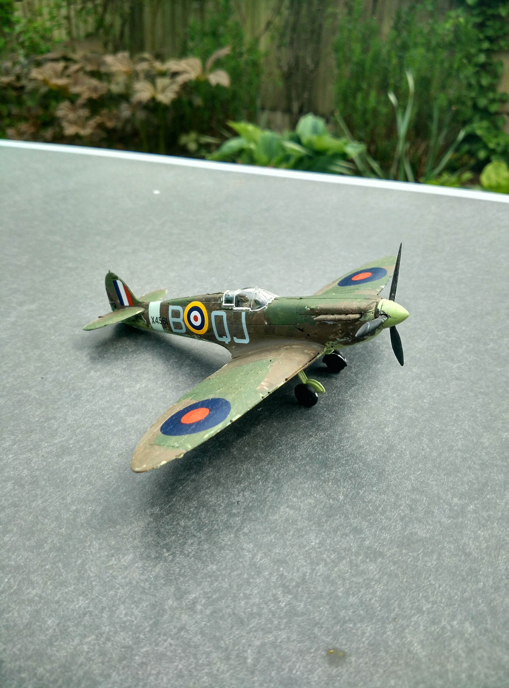
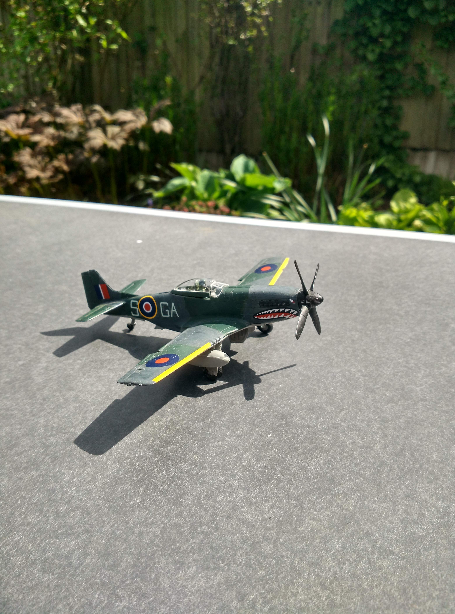
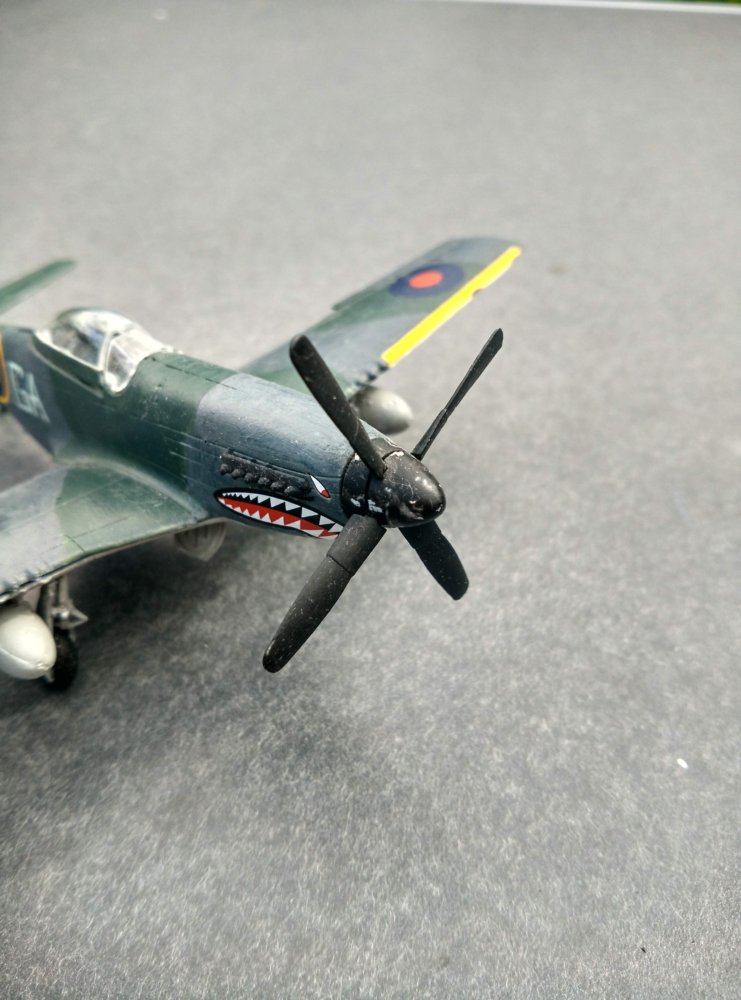
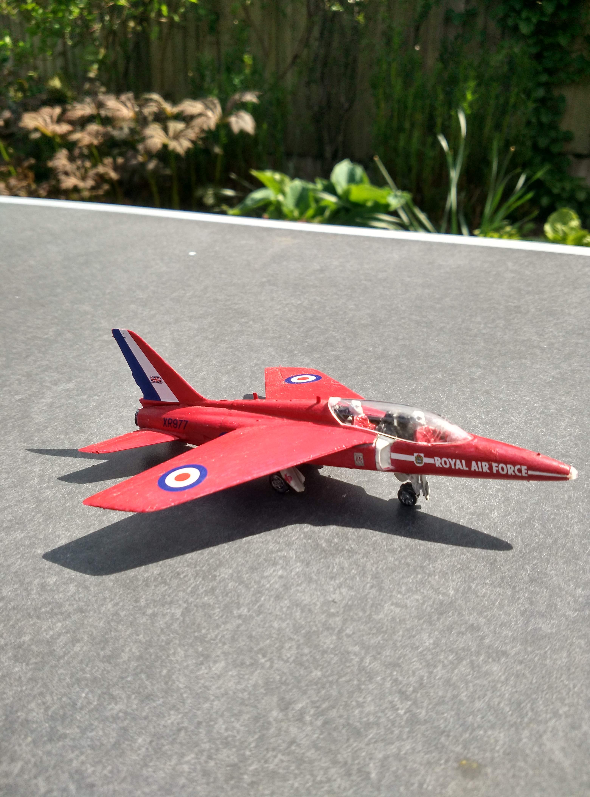
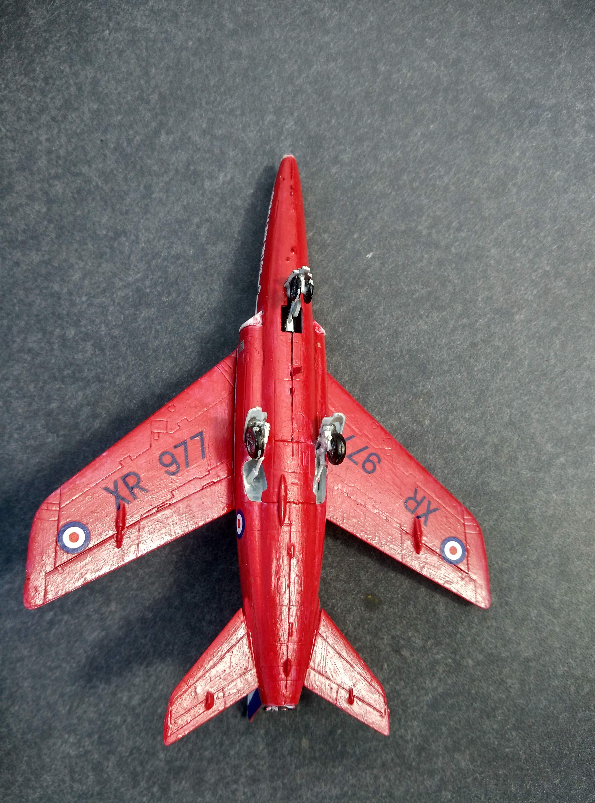
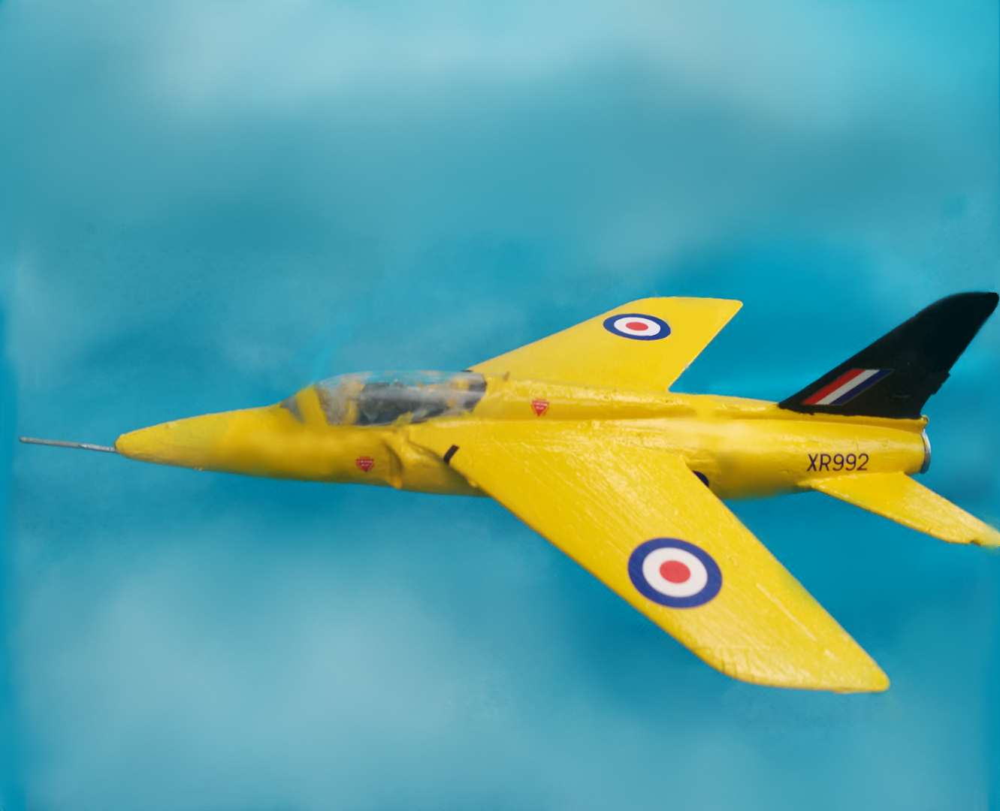
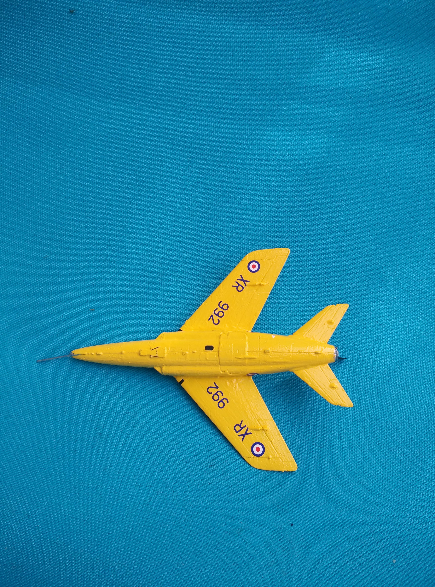

|Home| |The History of Airfix| |Airfix Now| | My Airfix Aircraft Hangar| | How to Make a Model|
Here are all of the Airfix planes that I have constructed. I started making them when I was 10 and never built any more after the Mustang. Recently, since I still had kits to complete, I have begun building them again.
Supermarine Spitfire Mk1a


This was my first Airfix kit. The painting is not as good as some of the other planes that I have built but at least the propellers spin!
Buy this kit here
North American Mustang™ IV


My second Airfix kit. This plane does not have spinning propellers but has fiddily transfers to complete the decorations, including the scary face on the front
Buy this kit here
Red Arrows Gnat


This is the first plane that my sister built. It was very time consuming as the shiny red paint took many coats and used almost the whole pot!
Buy this kit here
Folland Gnat T.1 'Yellowjacks'


I have recently completed this plane and is the first that I have chosen to build without the wheels. It is almost exactly the same as the Red Arrow, except its colour and decorations!
Sadly, Airfix do not make this kit anymore as I was not able to find it on their website. You might be able to buy it on Amazon or Ebay.
My latest project is a model of a Mitsubishi A6M2b Zero. You can see my tutorial for this aircraft here
If you are interested in Airfix models, visit the company's official website